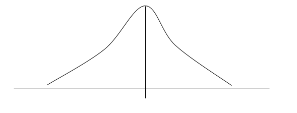
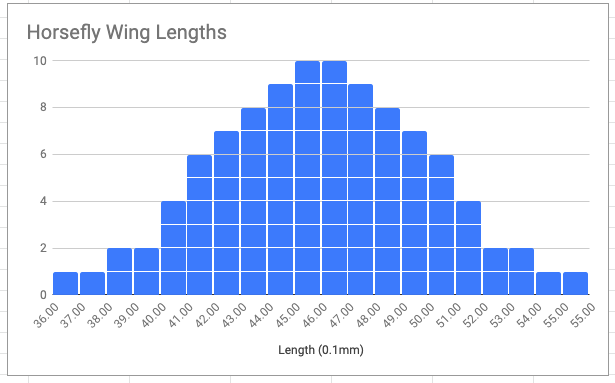

A distribution is a set of data that has a range, and from which a mean, median, mode, and other measures can be calculated. It is recommended to always plot a distribution so that all of the data points can be observed. This allows you to see the norms and exceptions, and better represent the data with any visualizations or statistics that you choose to present to your reader.
This distribution has a mean which is skewd to the left of the mean, potentially due to oultiers. The spread of the data is rather wide, and has a unimodal shape with the mode on the low end of the range, with a long tail on the right and a short tail on the left
This distribution is normal, meaning that it has a specific bell curve shape and no extreme outliers. The mean and meadian are the same, which is a trait particular to the normal distribution.
This data table shows the Wing Lengths of 100 Houseflies, but it is near impossible to make any observations from this data without looking at it. This is why a visualization of the distribution is important.
I chose to make a histogram of the data set, in order to view the shape, spread, level, and outliers. There appear to be no outliers, and the data seems to be relatively normally distributed. The data has a range of 19*0.1 mm, indicating a relatively narrow spread and the mean and meadian both appear to be about 45.5 * 0.1 mm. I found this data set here.